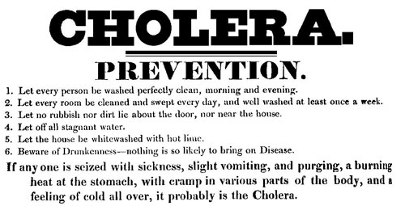

Cholera
Definition
Cholera is a bacterial infection. It is carried in water and in feces, and can be caught by drinking infected water or by eating food that has been contaminated with feces.
Feces can get on to food mainly through people not washing their hands before preparing or eating food, or through flies landing on feces and then on food.
Cholera epidemics usually happen in areas where there is no piped fresh water or sewage.
Open drains and sewage and open water supplies create conditions for cholera epidemics.
For this reason, cholera is a problem mainly in rural areas or in areas that have been struck by natural disaster and have no piped water supply.
Symptoms
- Severe, watery diarrhea
- Quick and severe dehydration
- Being very tired
- Dry skin
- Nausea and abdominal cramps
Prevention
Be sure to use the bottled, boiled, or chemically disinfected water for the following purposes:
- Drinking
- Preparing food or drinks
- Making ice
- Brushing your teeth
- Washing your face and hands
- Washing dishes and utensils that you use to eat or prepare food
- Washing fruits and vegetables
Pictures

Treatment
The most important thing is to rehydrate the patient to replace the fluids and salts they have lost.
Antibiotics can help to ease the other symptoms and to take to a doctor.